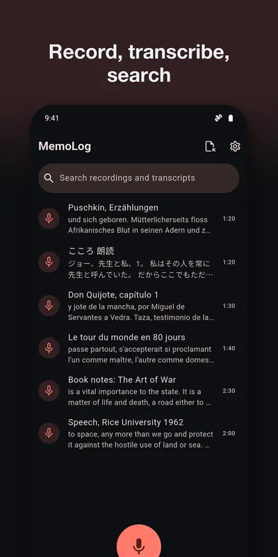
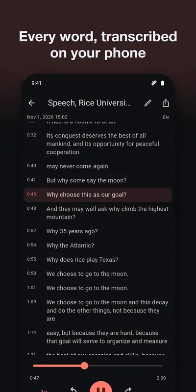
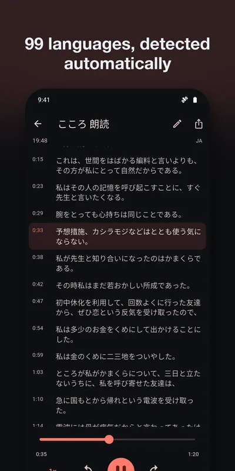
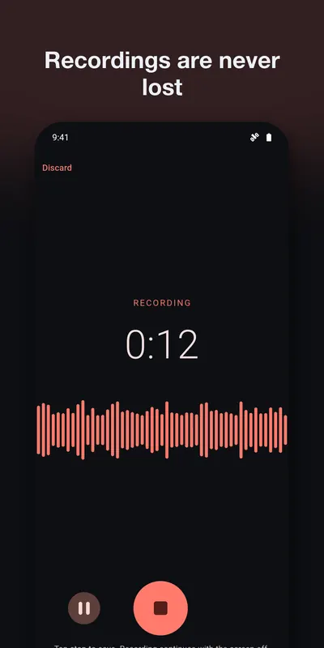
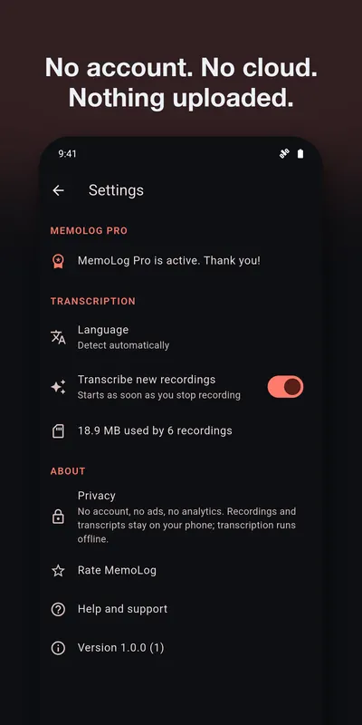
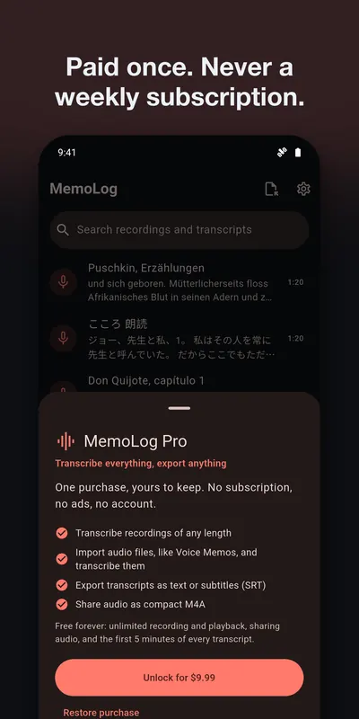

A voice recorder that writes the transcript on your phone
Record a lecture, a meeting or a thought on a walk. MemoLog turns it into text with a speech model that runs on the phone itself, so your audio is never uploaded and you do not need a connection.
Get it on Google PlayAndroid. Free: unlimited recording and playback, sharing audio, and the first 5 minutes of every transcript. MemoLog Pro, one in-app purchase paid once: transcripts of any length, audio file import, text and subtitle export, M4A.






What it does
- Records with one button. Pause and resume, a live level meter and a timer. It keeps going with the screen off, and Android shows a notification while it does.
- Saves as it goes. If the phone dies or the app is stopped, the recording is repaired the next time you open MemoLog, up to the last second saved.
- Transcribes on your phone. Sentences with timestamps, in the language it hears or the one you pick.
- Finds things again. Search across titles and transcripts. Tap a sentence to jump to it, and the text follows along as you listen at 0.5× to 2×.
- Shares when you ask. Share the audio as WAV. With Pro, export the transcript as text or SRT subtitles, share as M4A, or import an m4a, mp3, wav or aac file to transcribe it.
Where it helps
- Lectures and seminars. Stay with the talk, then search it later. How to get a good recording.
- Meetings and interviews. Useful when the conversation should not end up on someone else's server. First, check whether you need consent.
- Places without a signal. A plane, a basement lecture hall, a field trip. How offline transcription works.
- Ideas and notes to self. Talk, stop, and search the text next month.
How good is the transcript, really?
Good, and not perfect. Here is real output from MemoLog, on a recording of John F. Kennedy's 1962 speech at Rice University, with its echo and crowd. The highlighted lines are where it went wrong. Kennedy said "Why, 35 years ago, fly the Atlantic?" and "in this decade".
From the transcript shown in the second screenshot above.
You can follow the meaning, and you still need the audio to check details. That is why every sentence plays back with a tap.
- Engine
- whisper.cpp with OpenAI's Whisper base model. Base is the second smallest Whisper model, chosen so it fits on a phone. Larger models, like the ones big cloud services can run, tend to make fewer mistakes.
- Model size
- About 60 MB. It comes inside the app, so nothing more is downloaded. The first transcription copies it to the app's private storage, so expect about twice that on your phone.
- Languages
- 99 by automatic detection, 28 to choose by hand in Settings. Quality varies by language, and common languages do best.
- Speakers
- No speaker labels. A meeting comes out as one run of text.
- Speed and battery
- It runs on your phone's processor. A long recording takes a while and uses battery.
- Recording size
- 16 kHz mono WAV, about 1.9 MB a minute or 115 MB an hour. M4A export (Pro) is about 22 MB an hour.
Support
Questions, bugs, or feature requests: email contact@eastframe-technology.com. A human reads every message, usually the same day.
A short captioned walkthrough shows every feature. It was filmed on an iPhone; the Android app has the same screens. There is also a short clip of recording on Android.
Frequently asked
Is my audio sent anywhere to be transcribed?
No. MemoLog transcribes with a speech model that is built into the app and runs on your phone. It works in airplane mode, and nothing leaves your device unless you share it.
Do I have to download a language model?
No. The model comes inside the app and covers every language. There is nothing more to download after you install from Google Play.
Which languages are supported?
The model recognises 99 languages. MemoLog can detect the language by itself, in any of them. For better results on short or mixed recordings you can set it by hand in Settings, which offers 28 of the most common ones.
How accurate is it?
Clear speech close to the phone transcribes well. Noisy rooms, distant voices, heavy accents, names and technical terms make more mistakes. It is not word-perfect, so tap any sentence to hear the audio behind it before you rely on it.
Does it tell speakers apart?
No. You get one run of text with timestamps, not a labelled conversation.
How long does transcription take?
It depends on your phone and the length of the recording, because your phone does all the work. A progress figure shows how far along it is. Long recordings are safest with the app open and the phone on a charger.
What if the app is closed or the battery dies while recording?
MemoLog writes the audio as it records. The next time you open it, an interrupted recording is repaired and listed, up to the last second that was saved.
What does the free version include?
Unlimited recording and playback, sharing audio as WAV, and the first 5 minutes of every transcript. MemoLog Pro, a single purchase, transcribes recordings of any length, imports audio files to transcribe them, exports transcripts as text or subtitles (SRT), and shares audio as compact M4A.
Is there a subscription?
No. MemoLog Pro is a single purchase. Restore it on a new phone from Settings.
How do I move my recordings to a computer?
Share them from the recording screen. Android lets you send the file to any app you have, such as email or a drive app.
Privacy policy
Effective 2 November 2026. MemoLog is published by Eastframe Technology LLC.
What we collect: nothing. MemoLog has no account system, no analytics, no advertising, and no crash reporting service. It never connects to the internet and sends no data to us or anyone else.
Microphone. MemoLog uses the microphone only while you record. Recordings are saved on your device.
Recordings and transcripts stay on your device until you delete them or uninstall the app. Transcription runs on your device with a built-in speech model. If you share or export a recording or a transcript, it goes to the app or service you choose in the share sheet.
Purchases are handled by the App Store or Google Play. We do not see your payment details.
Third parties. The app contains no third-party advertising or analytics code. The only external page it opens is this one, and only when you tap it.
Children. MemoLog is not directed at children and collects no personal information from anyone.
Changes. A new version of this policy will be published at this address with a new effective date.
Credits
Speech recognition by whisper.cpp (MIT licence) with OpenAI's Whisper base model (MIT licence). Store pictures use public-domain recordings from LibriVox and a public-domain 1962 speech by John F. Kennedy.